クリチランド制作プロジェクト座談会！
TheSandboxのWeb3メタバースで作る未来
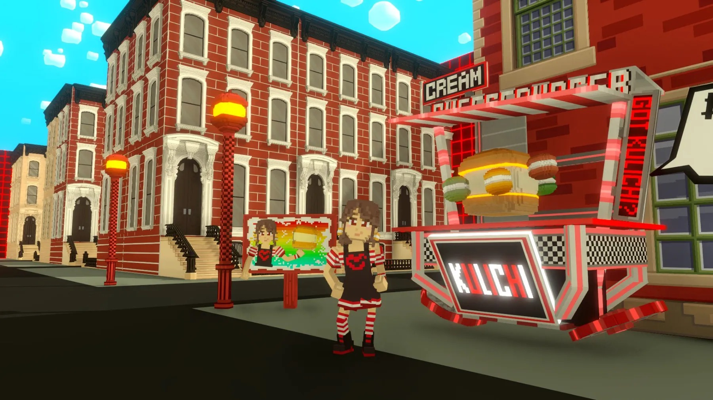
こんにちは！Vsw株式会社でマーケティングを担当しているTOMです😊
現在進行中の「クリチランド」は、メタバースプラットフォーム「The Sandbox」を活用した新しいデジタル空間。このプロジェクトは、メタバースデザインのスペシャリストである如月工房さんが制作を担当し、The SandboxのCOOセバスチャン氏の応援を受けながら進行しています。
今回は、クリチランドの魅力や制作のこだわり、そしてWeb3とメタバースの可能性について如月さんにお話を伺いました。また、代表「#クリチ」エーター加藤の熱いメッセージもご紹介します！
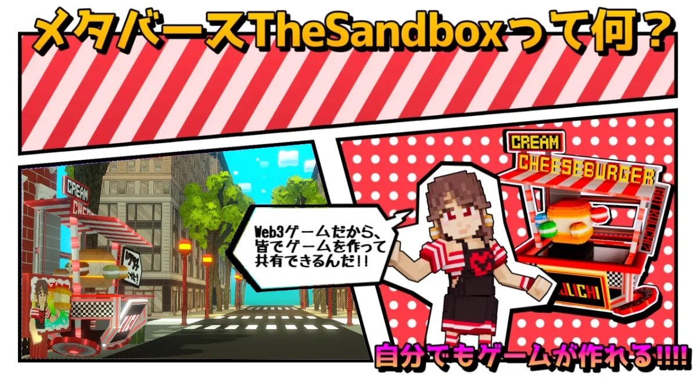
クリチランド座談会
この記事はこんな人におすすめ！📖
- Web3やメタバースの未来に興味がある方👨
- ニューヨークの街並みや観光が好きな方🗽
- 「#クリチ」の世界観をデジタルで体験してみたい方😋
- デジタル通貨や新しい仕組みに興味がある方💰
- メタバース店舗や新しい体験型マーケティングにワクワクする方🌐
TheSandboxのWeb3とメタバースが切り開く未来🌐
TOM：「クリチランドについて、The SandboxのWeb3メタバースはどのような関わっているのでしょうか？」
如月工房：「Web3メタバースの魅力は、ユーザーがたんなる受け取るだけでなく、自分共有できる仕組みにあります。The Sandboxのメタバースは、このWeb3の技術を最大限に活用し、デジタルならではの体験を可能にするプラットフォームです。クリチランドでは、この環境を活用して、現実ではなかなか行けない特別な「#クリチ」体験を提供していきます！」
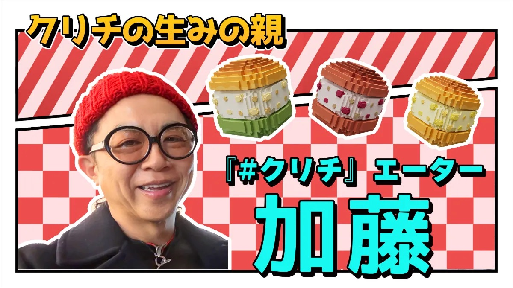
✨クリチランドが描く未来✨
加藤：「ニューヨークのマンハッタンで出会った絶妙な風味と柔らかさのクリームチーズ。その感動を日本で再現し、追求して完成したのが『#クリチ』です！The Sandboxのメタバースという新しい舞台で、さらに多くの人にその魅力を届けたいと思っています。Web3とメタバースが持つ可能性を活かしてリアルとデジタルを融合させた新しい体験を創造していきます！」
ニューヨークが舞台のメタバース🏙
TOM：如月さん、クリチランドはどのようなランドですか？
如月工房：「クリチランドは、ニューヨークの街並みを再現しながら、観光やゲームを通じて『#クリチ』の世界観を楽しめるメタバース空間です。リアルではなかなか行けない場所を自由に巡る楽しさと、メタバースでしか体験できない仕掛けを用意しています！」
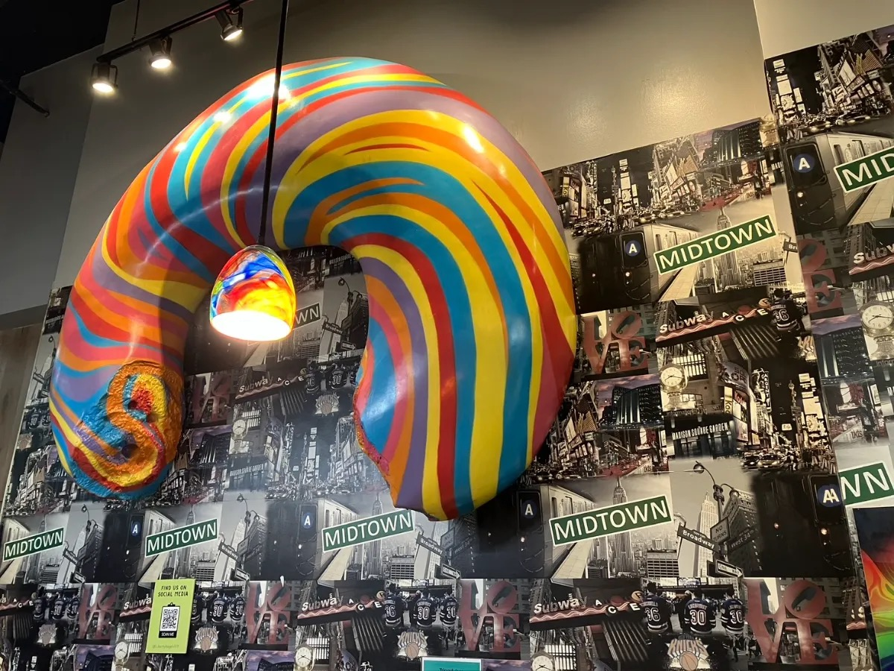
TOM：「現在どのようなエリアを制作しているんですか？」
如月工房：「現在制作中のエリアは、ニューヨークの特徴を活かした複数のエリアです。ユーザーが街を自由に探索しながら、クリチランドならではの魅力を発見できる空間を目指しています。」
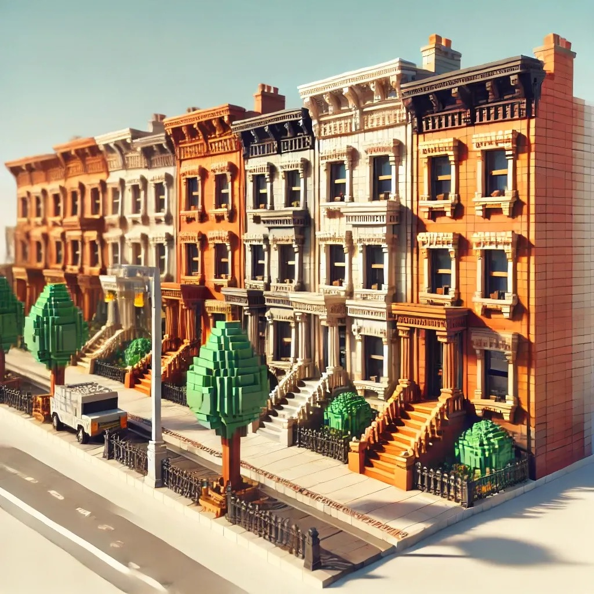
ブルックリン地区：
現在制作中。ブラウンストーン様式の街並みを忠実に再現し、おしゃれで温かみのあるエリアを作り上げています。
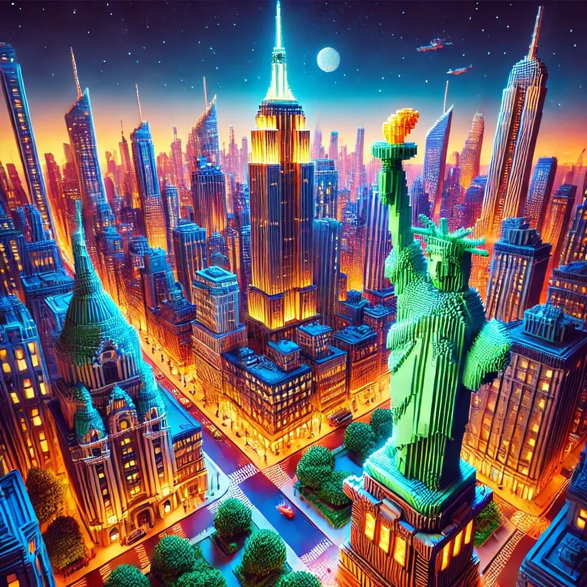
マンハッタン地区：
エンパイアステートビルや自由の女神など、ニューヨークを象徴するランドマークが集結したダイナミックなエリアです。
さらに、ブロンクス地区やクイーンズ地区など、多様な文化が交差するニューヨークの魅力を表現し、多彩な雰囲気が楽しめるエリアを制作予定です。
クリチランド全体が、ニューヨークを感じながらもメタバースならではの遊び心が詰まったご こだわっています！」
如月さんのこだわりポイント🍔
1. 街並みの再現
如月工房：「現在制作中のブルックリン地区では、特にブラウンストーン様式の建物を忠実に再現することにカを入れています。ニューヨークらしい温かさやおしゃれな雰囲気をメタバースでも感じてもらいたいですね。」
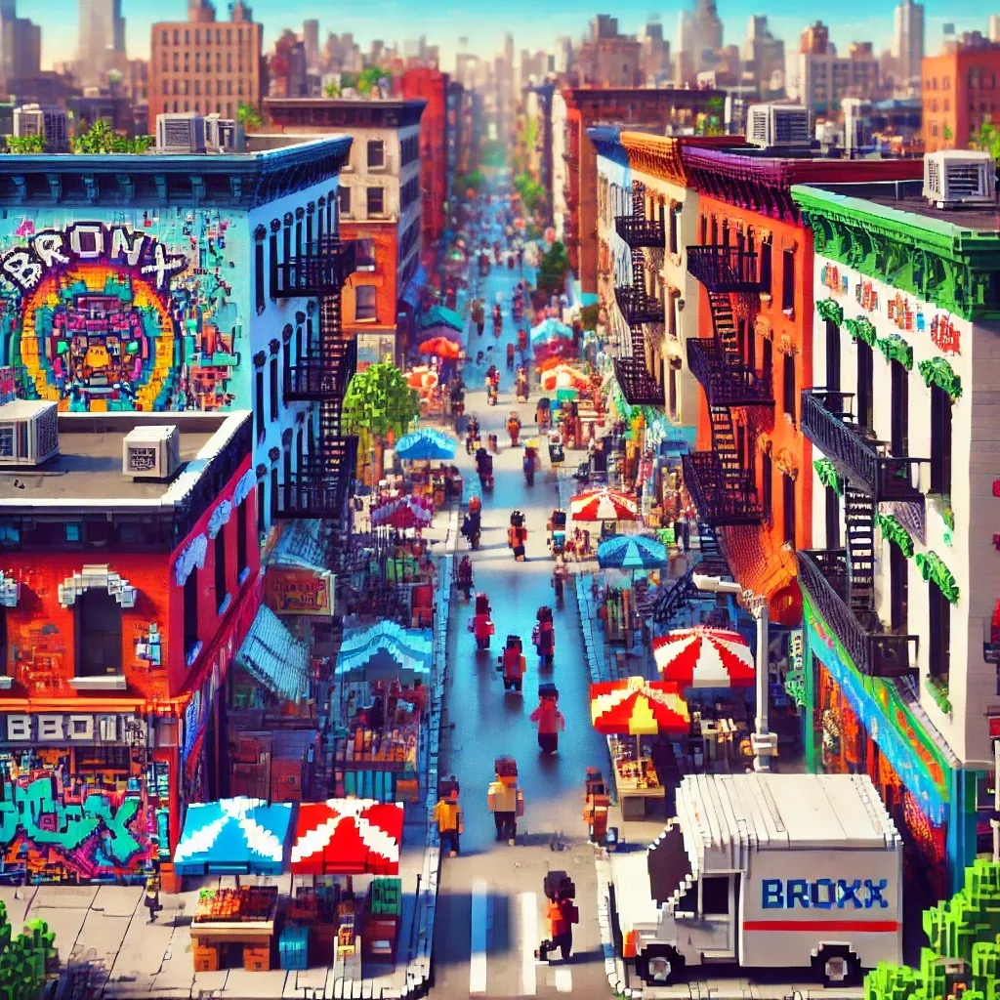
2. メタバースでのクリチのお店🍔✨
TOM：クリチランドには『#クリチ』の公式店舗も登場するそうですね！
如月工房：「はい、メタバース店舗も出店します。この店舗では、リアル店舗では味わえない体験を提供したいと考えています。」
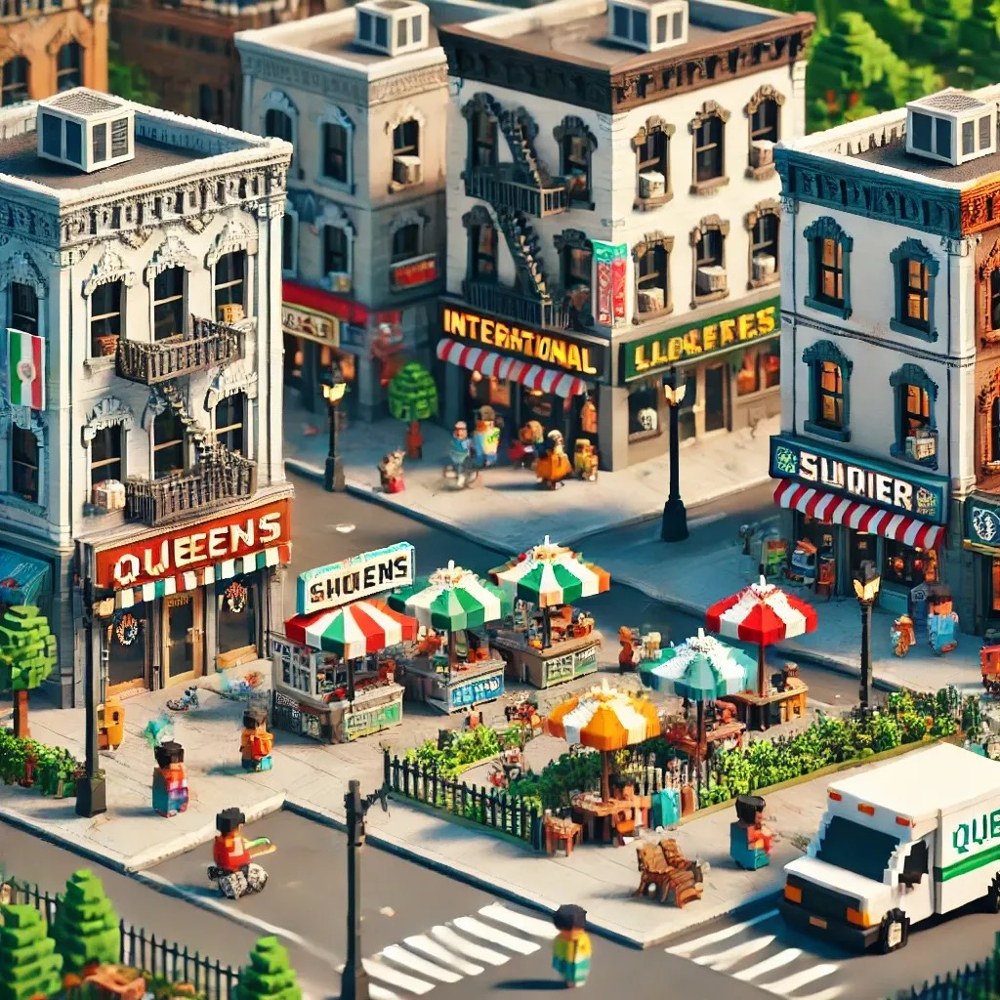
TOM：どんな体験ができるのですか？
加藤：「メタバースならではの可能性を活かし、リアル店舗では提供できない『#クリチ』の新しい魅力を捲供したいと思っています。」
クリチランドで楽しめる4つのアクティビティ🎮
TOM：クリチランドでは具体的にどんなことが楽しめるのですか？
如月工房：「以下のアクティビティを準備中です！」
1. ニューヨーク観光🗽
観光地を巡りながら、ランドマークやクリチちゃんが登場するスポットを楽しめます。
加藤：「メタバースならではの可能性を活かし、リアル店舗では提供できない『#クリチ』の新しい魅力を提供したいと思っています。」
2. おつかい風ミニゲーム📦
「#クリチ」の入った箱を指定された場所まで届ける配達ミニゲーム。街を探索しながら楽しめます！
3. アスレチックレース🏃
ビルを登ったり、街路樹を越えたりするスリリングなレースゲームです。
4. クリチ豆知識クイズ🧠
「#クリチ」に関する豆知識を学べるクイズスポットも設置予定。遊びながらクリチについて学べます！
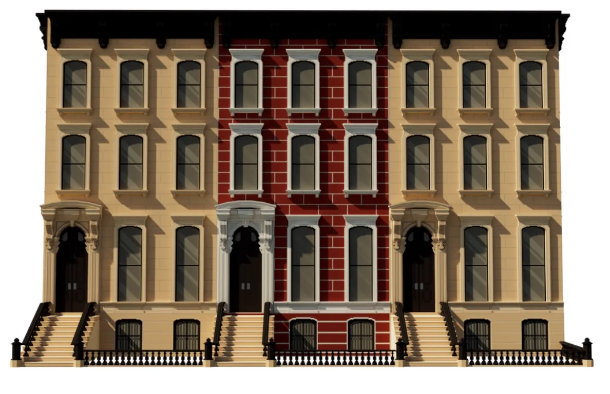
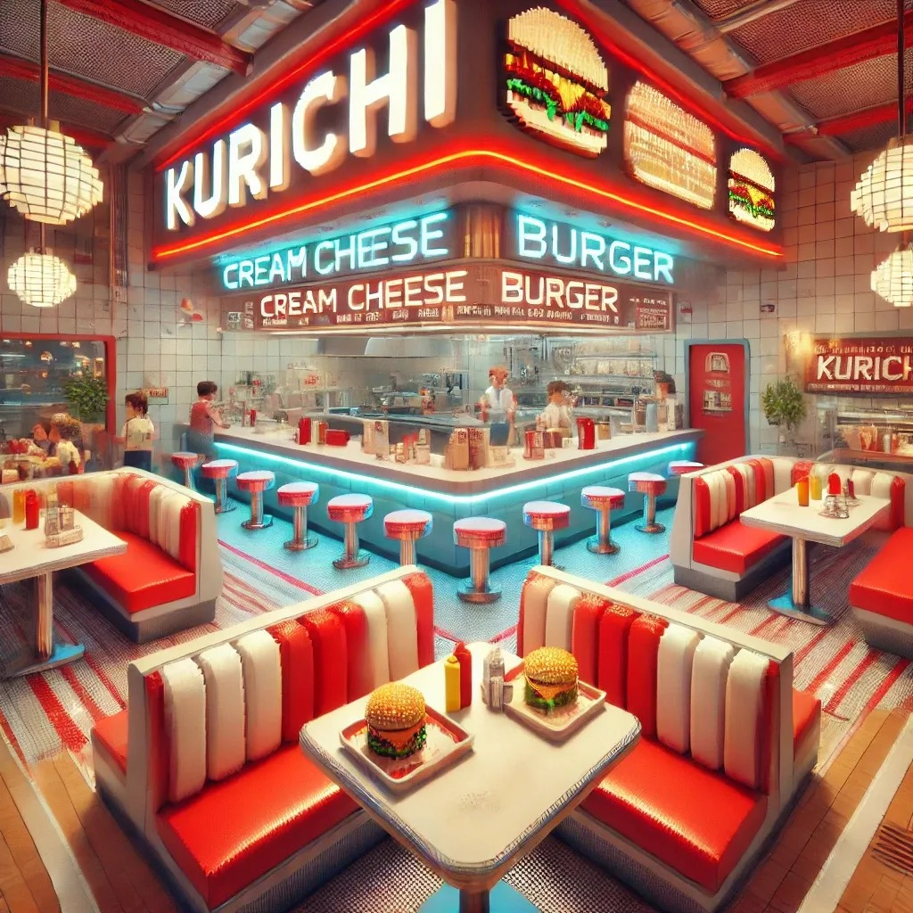
KURICHIコイン：メタバース内の新しい仕組み✨
TOM：最後にクリチランドで導入予定の「KURICHIコイン」について教えてください！
加藤：「KURICHIコイン」は、現在開発中の新しい仕組みです。ランド内で特定のミッションをクリアしたり、隠されたQRコードを見つけたりすることで、コインをゲットできる予定です！」
TOM：具体的にはどのように活用されますか？
加藤：「まだ秘密ですが、これにより、ユーザーがさらに『#クリチ』の新しい読み方を提供したいと思っています。Web3の仕組みを活用し、リアルとデジタルの価値を結びつける新しい試みです。クリチランドの体験がより楽しく、そして価値あるものとなるよう進行中のプロジェクトです！今後の進展が楽しみですね✨」
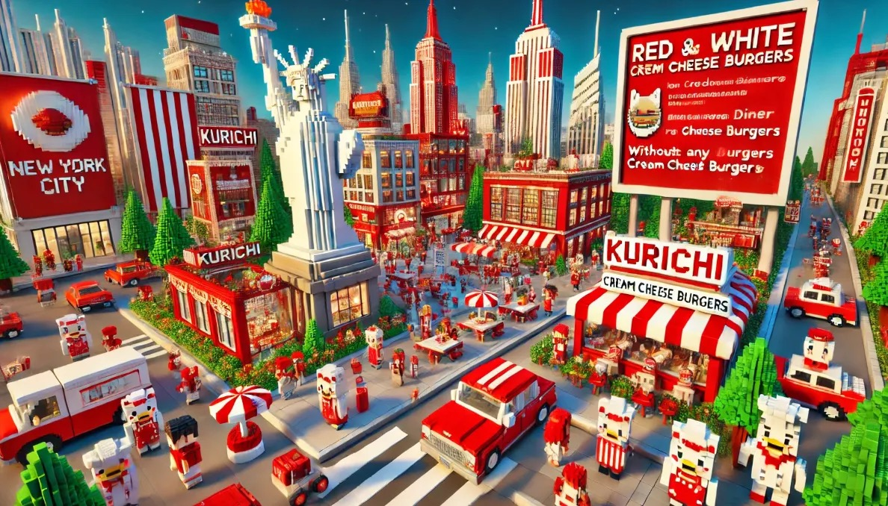
これからの開発スケジュール📋
設計期間：現在進行中！ニューヨーク全体のエリアを制作中。
テスト公開：2025年7月予定。バグ修正やユーザー体験の最終調整を実施します。
一般公開：2025年10月予定。クリチランドがいよいよ公開されます！
そうご期待！✨
クリチランドは、Web3とメタバースの可能性を活かした未来型のデジタル空間です。ニューヨーク観光や「#クリチ」の世界観、そしてメタバース店舗での特別な体験を通じて、リアルとデジタルを超える冒険をお届けします！
これからもブログで進捗をお伝えしていきますので、ぜひチェックしてください😊
執筆：Vsw株式会社 マーケティング担当 TOM 🍔
如月工房さんは、VSW社のメタバース担当として「クリチランド」の制作を手がけています。また、The SandboxのCOOセバスチャン氏と加藤代表が描く「Web3×メタバース」のビジョンを具現化し、未来を創り出すプロジェクトを進行中です！
如月工房さんのX(twitter)はこちら→🔗